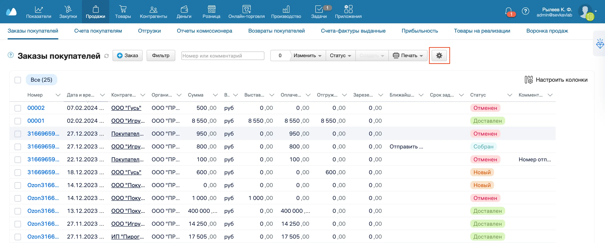
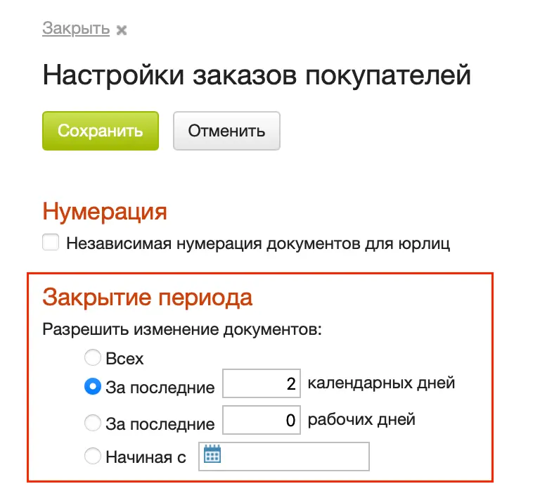
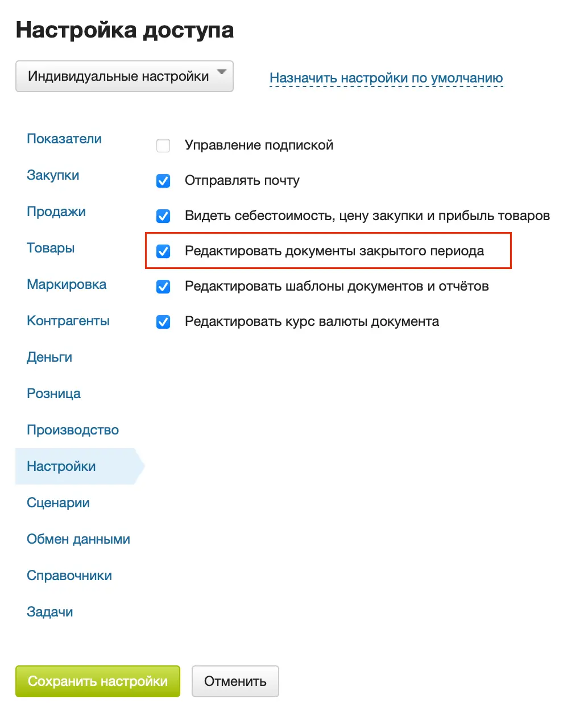

Вы можете запретить сотрудникам изменять документы, созданные после определенной даты. При этом они смогут редактировать новые документы.
Настройка закрытого периода
Закрытый период настраивается отдельно для каждого типа документов. Рассмотрим настройку закрытого периода на примере Заказа покупателя.
- Перейдите в раздел Продажи → Заказы покупателей.
- Нажмите на шестеренку в правой части экрана.

- Выберите период, для которого нужно закрыть редактирование.

- Нажмите на кнопку Сохранить.
Разрешение на редактирование документов в закрытом периоде
Администратор может редактировать любые документы, даже если они находятся в закрытом периоде.
В тарифах с гибкими настройками прав можно разрешить сотрудникам редактирование документов с закрытым периодом. Для этого:
- В меню пользователя выберите Настройки → Сотрудники.
- В списке сотрудников выберите сотрудника, настройки прав которого хотите изменить.
- В блоке Системные роли для роли Пользователь нажмите на кнопку Настроить права.
- В разделе Настройки отметьте Редактировать документы закрытого периода. Нажмите на кнопку Сохранить настройки.

- Нажмите на кнопку Сохранить вверху.